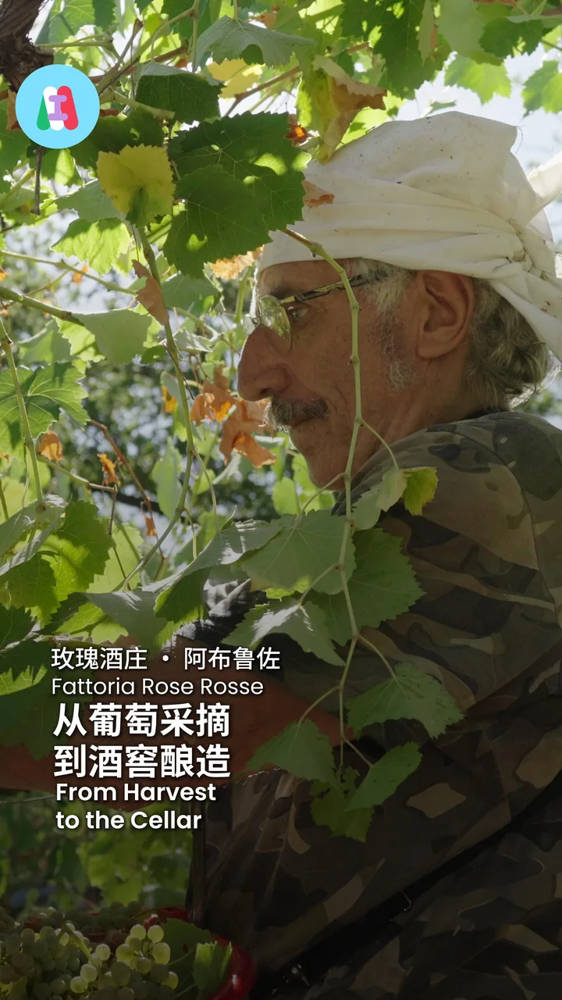
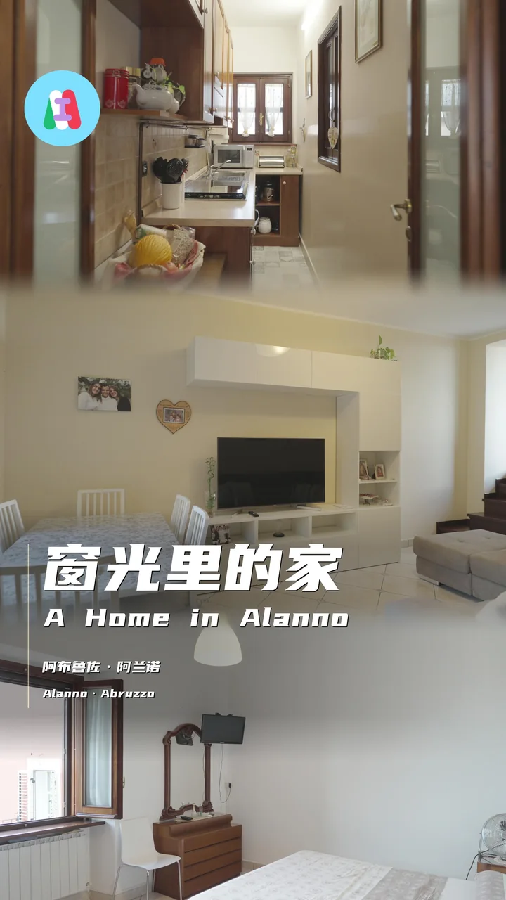
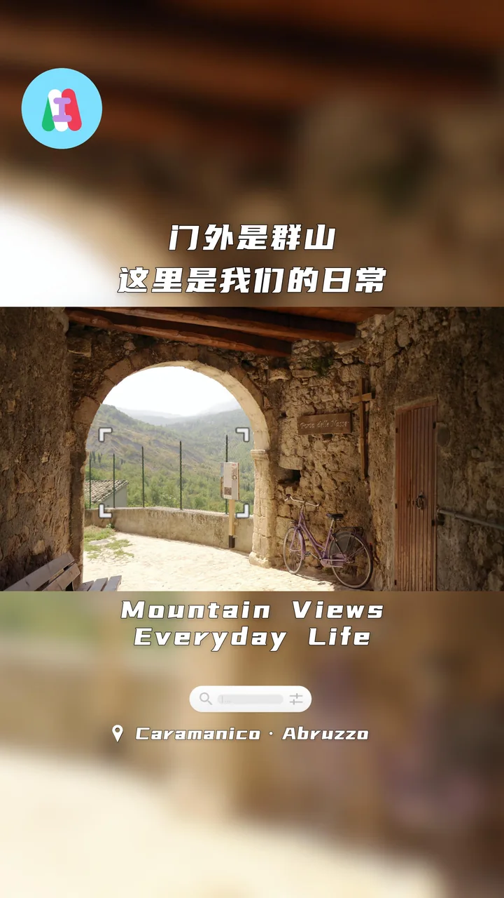

按合作品牌看持续制作的短视频、图文和发布系列。
AIR MACAU
跨平台系列累计制作 100 条短视频。查看目的地与登机牌礼遇主题，以及官方抖音发布记录。
为客户频道持续拍摄和剪辑。从生产线到展会，用一条短片讲清一个工艺或产品。点击封面观看客户频道原片。
走进阿布鲁佐的葡萄园、小镇和家庭餐厅，用短片记录意大利当地的生活。

小红书笔记《阿布鲁佐酒庄｜一串葡萄的酿酒旅程》
小红书笔记《在阿布鲁佐骑行，看到的远不止风景》
小红书笔记《在阿布鲁佐，好好吃饭就是生活本身》

小红书笔记《带围合庭院与全景露台的阿兰诺265㎡石屋》

小红书笔记《推门见峡谷，转身入烟火的意大利山城》
为澳门康礎制作短视频，记录物理治疗师如何向观众解释常见问题。


 MaxYourWay
MaxYourWay